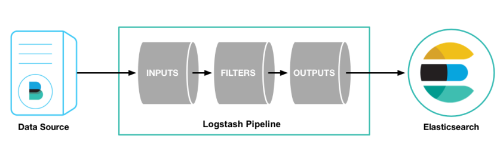
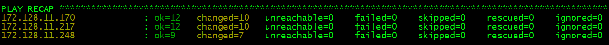
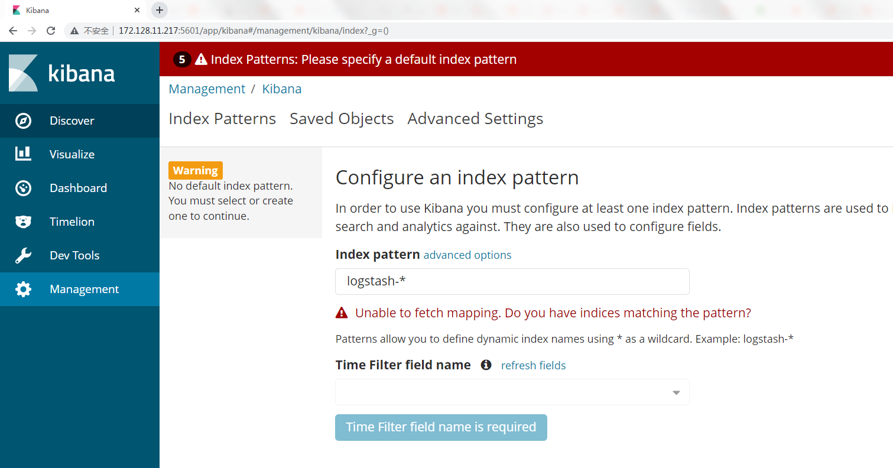

案例描述 本案例讲述了在多个节点部署Elk集群日志分析系统，分别在三个节点使用Ansible部署Kibana、Logstash以及Elasticsearch服务。
规划节点 节点规划见表1-1。
表1-1 节点规划
IP 主机名 节点
172.128.11.162
ansible
Ansible节点
172.128.11.217
node1
Elasticsearch/Kibana
172.128.11.170
node2
Elasticsearch/Logstash
172.128.11.248
node1
Elasticsearch
172.128.11.218
桌面化测试节点
基础准备 登录物理OpenStack平台，使用CentOS 7.9镜像创建四台云主机，云主机类型使用1VCPU/2GB内存/20GB硬盘。创建后的云主机作为本次案例的实验节点。另有一台桌面化的节点作为Ansible服务的测试节点。
案例实施 ELK常见架构 （1）Elasticsearch+Logstash+Kibana：这种架构是最常见的一种，也是最简单的一种架构，这种架构通过Logstash收集日志，运用Elasticsearch分析日志，最后通过Kibana中展示日志信息。
Elasticsearch：是一个开源分布式搜索引擎，它提供存储、分析、搜索功能。有分布式、基于reasful风格、支持海量高并发的准实时搜索场景、稳定、可靠、快速、使用方便等特点。其作用是接收搜集海量结构化日志数据，并提供给Kibana查询分析。
Logstash：是一个开源日志搜集、分析、过滤框架，支持多种数据输入输出方式。 它用于收集日志，对日志进行过滤形成结构化数据，并转发到Elasticsearch中。
Kibana：是一个开源日志报表系统，对Elasticsearch以及Logstash有良好的Web页面支持。它能对Elasticsearch提供的数据进行分析展示。

图1 ELK架构
（2）Elasticsearch+Logstash+Filebeat+Kibana：在这种架构中增加了一个Filebeat模块。这个模块在上面的内容中没有对它详细介绍，它是一款轻量的日志收集代理，用来部署在客户端中。这个服务较Logstash来说能够节省资源，一般在生产环境中大多采用这种架构，但是这种架构有一个弊端，那就是当Logstash出现故障后，会造成日志的丢失。
（3）Elasticsearch+Logstash+lebeat+Redis（及其他中间件）+Kibana：这种架构等于是上面第二种的完善，通过增加中间件避免数据丢失，当Logstash出现故障后，日志依旧留存在中间件内，当Logstash再次启动，则会读取中间件中积压的日志。在出现“too many open files”报错的时候，大多数情况是由于程序没有正常关闭一些资源引起的，所以出现这种情况时需要检查I/O读写、socket通讯等是否正常关闭等。当然也可以通过修改参数，将系统的文件句柄限制提高，来缓解这一压力。
ELK部署 （1）配置主机映射：
修改当前节点主机名为ansible，并修改ansible节点主机映射，命令如下：
1 2 3 4 5 6 7 8 9 [root@localhost ~]# hostnamectl set-hostname ansible [root@localhost ~]# bash [root@ansible ~]# cat /etc/hosts 127.0.0.1 localhost localhost.localdomain localhost4 localhost4.localdomain4 ::1 localhost localhost.localdomain localhost6 localhost6.localdomain6 172.128.11.162 ansible 172.128.11.217 node1 172.128.11.170 node2 172.128.11.248 node3
配置免密访问，虚拟机root用户密码为000000，命令如下：
1 2 3 4 [root@ansible ~]# ssh-keygen [root@ansible ~]# ssh-copy-id node1 [root@ansible ~]# ssh-copy-id node2 [root@ansible ~]# ssh-copy-id node3
将ansible节点的域名解析文件复制给安装Elasticsearch集群服务的三个节点，命令如下：
1 2 3 [root@ansible ~]# scp /etc/hosts node1:/etc/ [root@ansible ~]# scp /etc/hosts node2:/etc/ [root@ansible ~]# scp /etc/hosts node3:/etc/
关闭ansible节点的防火墙和Selinux配置（如已关闭，则不需要操作），命令如下：
1 [root@ansible ~]# setenforce 0
（2）软件包下载及uum源配置
修将提供的Elasticsearch、Kibana以及Logstash软件包下载至ansible节点/root目录下，并将相应服务的软件包拷贝至不同节点。
1 2 3 [root@ansible ~]# ls Ansible.tar.gz elasticsearch-6.0.0.rpm kibana-6.0.0-x86_64.rpm logstash-6.0.0.rpm [root@ansible ~]# tar -zxvf Ansible.tar.gz
将Elasticsearch软件包拷贝至三个节点，将Kibana软件包拷贝至node1节点，将Logstash软件包拷贝至node2节点，命令如下：
1 2 3 4 5 6 7 8 9 [root@ansible ~]# scp elasticsearch-6.0.0.rpm node1:/root/ [root@ansible ~]# scp elasticsearch-6.0.0.rpm node2:/root/ [root@ansible ~]# scp elasticsearch-6.0.0.rpm node3:/root/ [root@ansible ~]# scp kibana-6.0.0-x86_64.rpm node1:/root/ [root@ansible ~]# scp kibana-6.0.0-x86_64.rpm node2:/root/ [root@ansible ~]# scp kibana-6.0.0-x86_64.rpm node3:/root/ [root@ansible ~]# scp logstash-6.0.0.rpm node1:/root/ [root@ansible ~]# scp logstash-6.0.0.rpm node2:/root/ [root@ansible ~]# scp logstash-6.0.0.rpm node3:/root/
将软件包ansible.tar.gz上传至ansible节点配置本地yum源，并安装Ansible：
1 2 3 4 5 6 7 8 9 [root@ansible ~]# tar -zxvf ansible.tar.gz -C /opt/ [root@ansible ~]# mv /etc/yum.repos.d/* /media/ [root@ansible ~]# vi /etc/yum.repos.d/local.repo [ansible] name=ansible baseurl=file:///opt/ansible gpgcheck=0 enabled=1 [root@ansible ~]# yum -y install ansible
（3）配置Ansible主机映射
创建示例目录，并配置Ansible主机映射。
1 2 3 4 5 6 7 8 9 [root@ansible ~]# mkdir example [root@ansible ~]# cd example [root@ansible example]# vi /etc/ansible/hosts [node1] 172.128.11.217 [node2] 172.128.11.170 [node3] 172.128.11.248
使用CentOS-7-x86_64-DVD-2009.iso镜像文件作为安装库，将镜像挂载至/opt/centos，编写yum源文件，安装vsftpd服务，用于给远程主机安装Java。命令如下：
1 2 3 4 5 6 7 8 9 10 11 12 13 14 15 16 17 18 19 20 21 22 23 [root@ansible example]# mkdir /opt/centos [root@ansible example]# mount CentOS-7-x86_64-DVD-2009.iso /opt/centos/ [root@ansible example]# vi /etc/yum.repos.d/local.repo [ansible] name=ansible baseurl=file:///opt/ansible gpgcheck=0 enabled=1 [centos] name=centos baseurl=file:///opt/centos gpgcheck=0 enabled=1 [root@ansible example]# yum install -y vsftpd [root@ansible example]# vi /etc/vsftpd/vsftpd.conf anon_root=/opt [root@ansible example]# systemctl restart vsftpd [root@ansible example]# vi ftp.repo [centos] name=centos baseurl=ftp://172.128.11.162/centos/ gpgcheck=0 enabled=1
（4）安装Elasticsearch获取配置文件
安装Elasticsearch服务并编写node1节点配置文件，命令如下：
1 2 3 4 5 6 7 8 9 10 11 12 [root@ansible example]# rpm -ivh /root/elasticsearch-6.0.0.rpm [root@ansible example]# cp -rf /etc/elasticsearch/elasticsearch.yml elk1.yml [root@ansible example]# cat elk1.yml | grep -Ev "^$|^#" cluster.name: ELK node.name: node1 node.master: true node.data: false path.data: /var/lib/elasticsearch path.logs: /var/log/elasticsearch network.host: 172.128.11.217 http.port: 9200 discovery.zen.ping.unicast.hosts: ["node1","node2","node3"]
编写node2节点配置文件，命令如下：
1 2 3 4 5 6 7 8 9 10 11 [root@ansible example]# cp elk1.yml elk2.yml [root@ansible example]# cat elk2.yml | grep -Ev "^$|^#" cluster.name: ELK node.name: node2 node.master: false node.data: true path.data: /var/lib/elasticsearch path.logs: /var/log/elasticsearch network.host: 172.128.11.170 http.port: 9200 discovery.zen.ping.unicast.hosts: ["node1","node2","node3"]
编写node3节点配置文件，命令如下：
1 2 3 4 5 6 7 8 9 10 11 [root@ansible example]# cp elk1.yml elk3.yml [root@ansible example]# cat elk3.yml | grep -Ev "^$|^#" cluster.name: ELK node.name: node3 node.master: false node.data: true path.data: /var/lib/elasticsearch path.logs: /var/log/elasticsearch network.host: 172.128.11.248 http.port: 9200 discovery.zen.ping.unicast.hosts: ["node1","node2","node3"]
（5）安装Kibana获取配置文件
安装Kibana服务并编写配置文件，命令如下：
1 2 3 4 5 6 [root@ansible example]# rpm -ivh /root/kibana-6.0.0-x86_64.rpm [root@ansible example]# cp -rf /etc/kibana/kibana.yml . [root@ansible example]# cat kibana.yml |grep -v ^# server.port: 5601 server.host: "172.128.11.217" elasticsearch.url: "http://172.128.11.217:9200"
（6）安装Logstash获取配置文件
安装Logstash服务并获取配置文件，命令如下：
1 2 3 4 [root@ansible example]# rpm -ivh /root/logstash-6.0.0.rpm [root@ansible example]# cp -rf /etc/logstash/logstash.yml . [root@ansible example]# vi logstash.yml http.host: "172.128.11.170"
新建日志输出文件，内容如下：
1 2 3 4 5 6 7 8 9 10 11 12 13 14 15 16 17 [root@ansible example]# vi syslog.conf input { file { path => "/var/log/messages" #指定文件的路径 type => "systemlog" #定义日志类型，可自定义 start_position => "beginning" #指定何时开始收集 stat_interval => "3" } } output { if [type] == "systemlog" { elasticsearch { hosts => ["172.128.11.217:9200"] #这里的地址为node1主机地址 index => "system-log-%{+YYYY.MM.dd}" } } }
（7）编写剧本文件
安编写Playbook剧本文件，命令如下：
1 2 3 4 5 6 7 8 9 10 11 12 13 14 15 16 17 18 19 20 21 22 23 24 25 26 27 28 29 30 31 32 33 34 35 36 37 38 39 40 41 42 43 44 45 46 47 48 49 50 51 [root@ansible example]# vi cscc_install.yaml - hosts: all remote_user: root tasks: - name: rm repo shell: rm -rf /etc/yum.repos.d/* - name: copy repo copy: src=ftp.repo dest=/etc/yum.repos.d/ - name: install java shell: yum -y install java-1.8.0-* - name: install elk shell: rpm -ivh elasticsearch-6.0.0.rpm - hosts: node1 remote_user: root tasks: - name: copy config copy: src=elk1.yml dest=/etc/elasticsearch/elasticsearch.yml - name: daemon-reload shell: systemctl daemon-reload - name: start elk shell: systemctl start elasticsearch && systemctl enable elasticsearch - name: install kibana shell: rpm -ivh kibana-6.0.0-x86_64.rpm - name: copy config template: src=kibana.yml dest=/etc/kibana/kibana.yml - name: start kibana shell: systemctl start kibana && systemctl enable kibana - hosts: node2 remote_user: root tasks: - name: copy config copy: src=elk2.yml dest=/etc/elasticsearch/elasticsearch.yml - name: daemon-reload shell: systemctl daemon-reload - name: start elk shell: systemctl start elasticsearch && systemctl enable elasticsearch - name: install logstash shell: rpm -ivh logstash-6.0.0.rpm - name: copy config copy: src=logstash.yml dest=/etc/logstash/logstash.yml - name: copy config copy: src=syslog.conf dest=/etc/logstash/conf.d/syslog.conf - hosts: node3 remote_user: root tasks: - name: copy config copy: src=elk3.yml dest=/etc/elasticsearch/elasticsearch.yml - name: daemon-reload shell: systemctl daemon-reload - name: start elk shell: systemctl start elasticsearch && systemctl enable elasticsearch
执行Playbook完成ELK集群的部署，命令如下：
1 [root@ansible example]# ansible-playbook cscc_install.yaml
执行结果如图2所示：

图2 执行结果
浏览器访问node1节点5601端口，http://172.128.11.217:5601/，如图3所示：

图3 部署成功